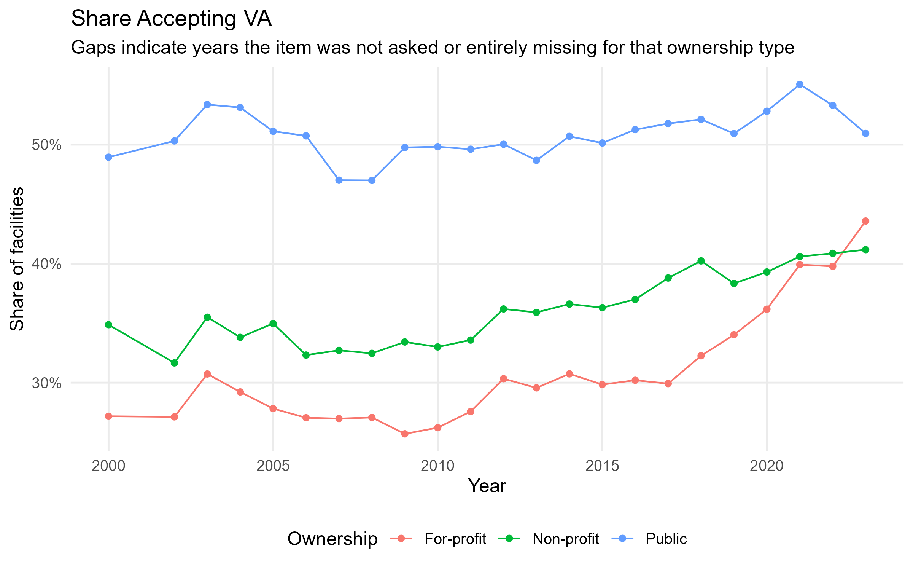
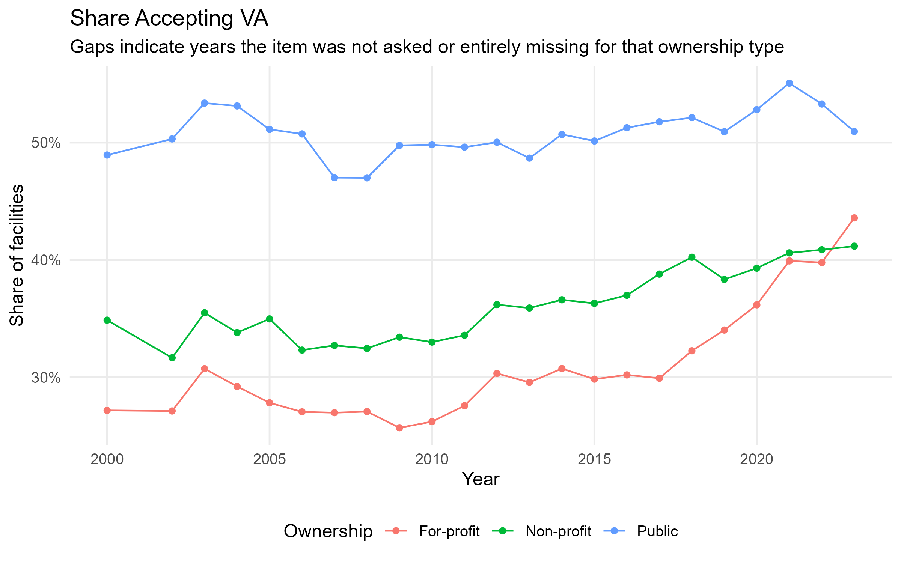

In the last post I discussed some of the motivation for wanting to look at treatment center (TC) ownership proporitons and compare them to hospitals. In the last 25 years we’ve seen a steep rise in for-profit TCs from around 25% to over 40%. This development is dissimilar to hospitals which are majority non-profit over the same time period.
One last thing I should’ve checked was mental health. As I try to understand a bit more the reason for the rise in for-profit TCs, I thought about how possible changes to Medicaid/Medicare and parity laws might impact things. The logic is flawed already because the main change in public insurance that would’ve impacted TC ownership would be parity, but since that passed in 2010 via the ACA and the rise began before that, I think there must be some other explanation. But just to double check, here is the chart of mental health agencies specifically.

As can be seen in this figure, the non-profit landscape dominates the mental health industry in-line with hospitals, though it seems that for-profit mental health clinics are a bit more popular than publicly owned clinics.
This is all to say: my next goal for this series is to explore (descriptively) some of the differences between for and non profit TCs. Today’s post will be about payment type accepted. One of the main reasons a center might orient itself as a non-profit is because of the tax incentive received by these organizations. This is because, from a revenue-maximizing standpoint, those who are un or under-insured should be under-treated since they have such low reimbursement rates; the government then steps in to ensure those who are un or under-insured still receive treatment. This is all to say: we may expect differences in the payment types accepted across ownership types. For-profit treatment centers have an incentive to accept fewer patients whose billing has a low reimbursement rate or a low revenue generation. This should also extend to facility offered services, though I’ll tackle those next week.
These charts are descriptive, not causal. None of what I say here should be taken as evidence of causal relationships.
I raise this because there’s been some discourse on X about the role of peer review. As summarized in the tweets below, Nate Silver argues that journals might benefit from having non-academic practitioners on peer review committees, suggesting journalists are better at detecting “BS.” He also contends that Substack posts and graphics could be a faster and better alternative to the traditional publishing pipeline.
Academic journals might be a lost cause but they'd probably be better if you had some non-academic practitioners serving as reviewers. Journalists have their problems too but they have much better bullshit detectors, for instance.
— Nate Silver (@NateSilver538) August 17, 2025
You ran some cool regression analysis OK great. Make some nice graphics and put it on a Substack. Engaging headline, 1500-2500 well-written words. That's literally 100x faster than trying to publish in a journal and it's better peer review anyway.
— Nate Silver (@NateSilver538) August 17, 2025
While I acknowledge the slow pace and inefficiencies of peer review, I believe it remains essential for scientific progress. Causal inference is hard work, and the critique and scrutiny of peers are what make research credible and enduring. That’s why I reserve causal claims for work I intend to submit to journals, where they can be carefully evaluated by peers with the training and expertise to assess both the statistical methods and the theoretical assumptions involved.
The following charts come from SAMHSA data, particuarly the N-SSATS and N-SUMHSS. Note that the N-SSATS and the N-MHSS — two separate databases for tracking details on treatment centers and mental health clinics respectively — was rolled into the N-SUMHSS in 2021. SAMHSA doesn’t recommend using comparisons across the timeline of the merger. I did my best to restrict analysis to the same population. You can find my code in the GitHub repo under series/TC_Ownership/scripts. You can use the SAMHSA website to download the data here.

One thing I want to note: the y-axis is zoomed-in so make sure not to interpret differences in greater magnitude than they truly are. For-profits, I would say, seem to be relatively similar to NP/public except for under EARMARK (acceptance of state/local/federal funds) and pre-ACA acceptance of Medicaid/Medicare.
Overall, acceptance patterns move in the same direction across ownership types. If I were to plot the change in acceptance rather than the raw proportion, the trajectories would look quite similar. That aligns with evidence from hospitals suggesting that ownership alone does not drive radically different decisions.
Where the differences emerge is in public insurance. Lower reimbursement rates, heavier administrative requirements, and patient mix considerations make Medicaid and Medicare less attractive to for-profits. While these have been discussed in public finance literature for quite some time, the fact that for-profits may not even accept private insurance might hint at the fact that dealing with any insurance at all is itself a significant enough burden/cost.
This flexibility helps explain the rise of for-profits over the past two decades. By choosing which patients to serve (and which to exclude), for-profits can structure their operations around revenue-maximizing groups. While the government incentivizes the treatment of those un/underinsured leading to increased access to non-profit and public facilities in the short run, the general equilibrium effect may align with the intent. In other words, expanding access for the uninsured can also create space for more for-profits to enter, potentially shifting market power away from non-profit and public providers and making a variety of treatment options less attainable.
I plan on continuing to work on this, with tackling services next. It may be the case that payment type not only affects the people served but the services that a TC provides due to the close link between insurance coverage and service design.